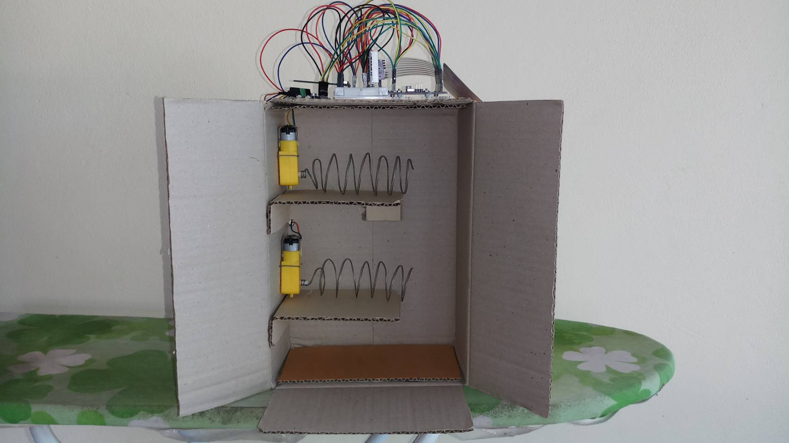
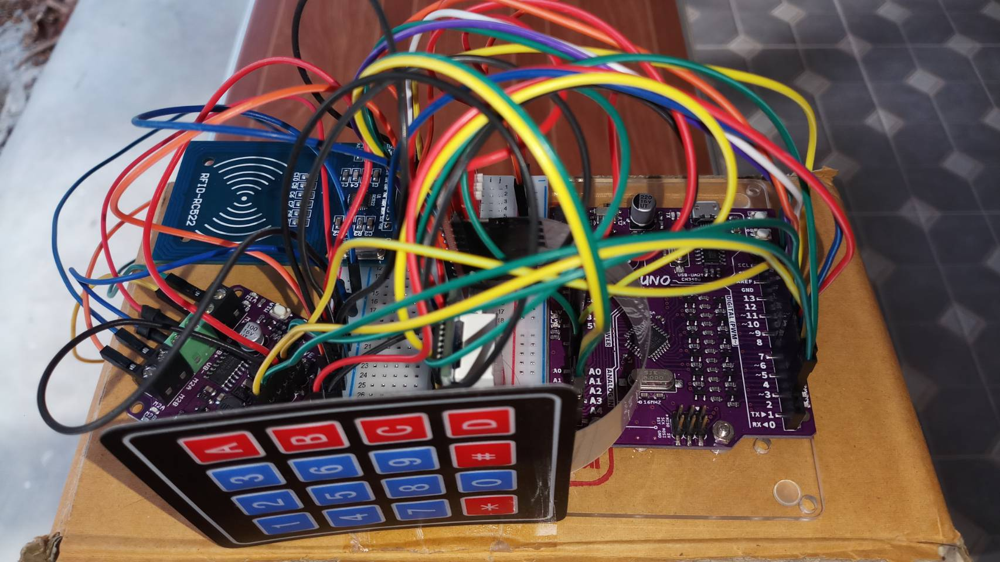
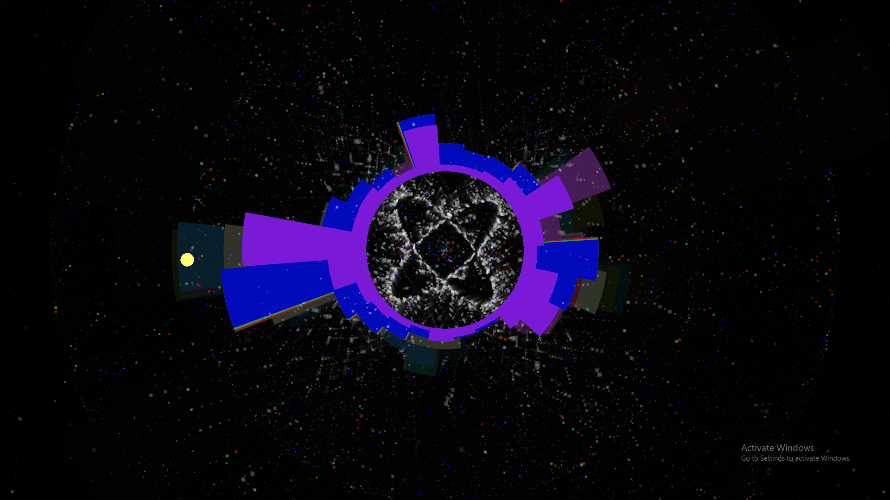
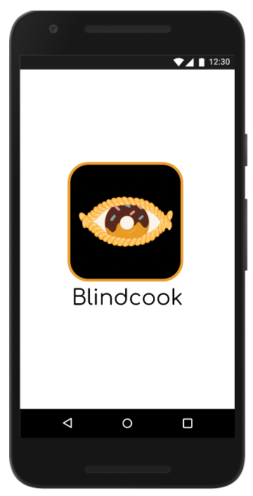
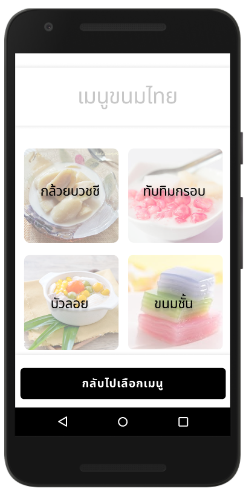
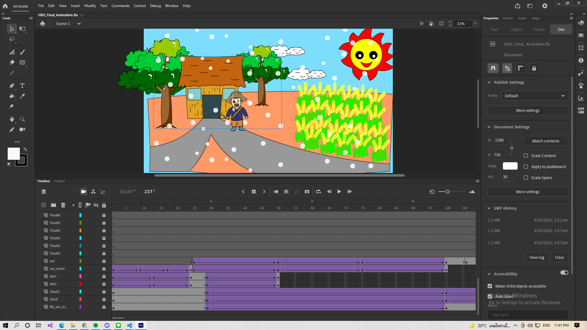
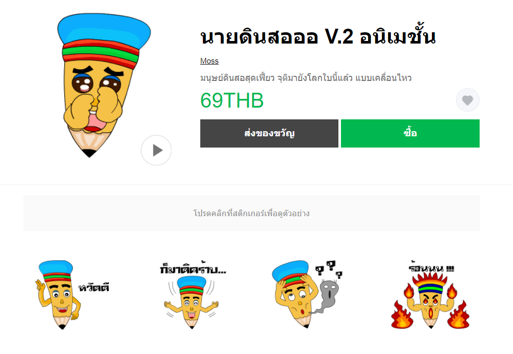
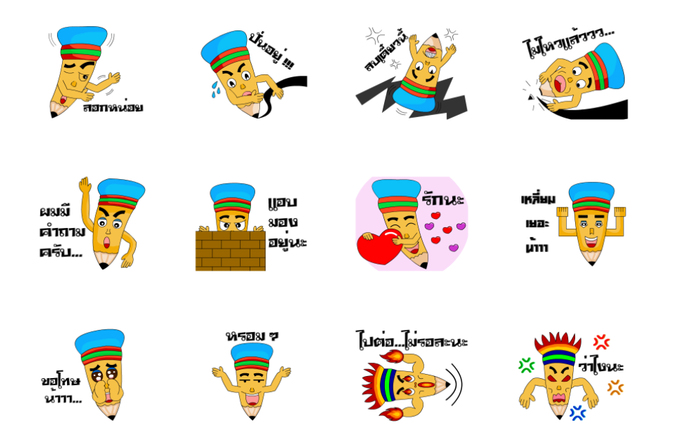
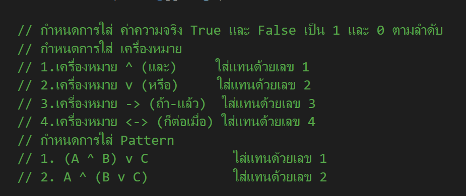

Detergent Vending Machine
ระบบการซื้อของจากการกดสั่งตามต้องการหรือตู้ขายสินค้าแบบหยอดเหรียญ โดยใช้เหรียญในการซื้อ แต่ในกรณีนี้ไม่มีเซนเซอร์ที่ตรวจจับเหรียญ เลยนำ RFID มาใช้จำลองแทนเหรียญ ซึ่งผู้ที่นำไปใช้สามารถเข้าไปปรับแต่งโค้ดเพื่อเปลี่ยนราคาสินค้าที่จะวางขายได้ตามต้องการ


Music Visualization Processing
Music Visualization คือคุณลักษณะที่พบในโปรแกรมสร้างภาพเพลงอิเล็กทรอนิกส์ และซอฟต์แวร์เครื่องเล่นสื่อสร้างภาพเคลื่อนไหว โดยอิงจากเพลง โดยปกติภาพจะถูกสร้างและแสดงผลแบบเรียลไทม์และในลักษณะที่ซิงโครไนซ์กับเพลงในขณะที่เล่นนั่นเอง โดยออกแบบและสร้างขึ้นด้วยโปรแกรม Processing

Blind Cook Application
โครงการ Blindcook เป็นการพัฒนาโปรแกรมในรูปแบบแอพพลิเคชัน ผ่านตัว Flutter โดย ใช้ร่วมกับ Visual Studio เพื่อสอนผู้พิการทางสายตาทํา
ของหวาน โดยจะมีฟังก์ชัน Google Speech to Text and Text to Speech และฟังก์ชัน Image Processing ที่ช่วยให้ผู้พิการทางสายตาสามารถหาวัตถุดิบและอุปกรณ์ด้วย
ตนเองได้ผ่านเสียง นอกจากนี้ผู้ที่ต้องการถ่ายทอดทักษะการทําอาหารให้กับผู้พิการทางสายตายังสามารถใช้
งานแอพพลิเคชันนี้ได้ โดยการเผยแพร่ข้อมูลสูตรและวิธีการทําขนมของตนเองลงในแอพพลิเคชันได้อีกด้วย ซึ่งโครงการนี้ได้ยื่นสมัคร ผ่านรอบแรก ไปจากสำนักงาน NSC และได้เริ่มทำเบื้องต้นขึ้นมาแล้ว 25 %


The Farmer and the Snake Animation
ผลงานการทำ Animation ผ่านโปรแกรม Animate CC ซึ่งได้ดัดแปลงมาจากนิทานอีสป เรื่อง ชาวนากับงูเห่า

Sticker Line Pensil Boy V2 Animation
ผลงานการทำ Sticker Line Emoji Animation ผ่านโปรแกรม Animate CC ซึ่งได้ออกแบบเป็นมนุษย์ดินสอ ท่าทางประกอบจะเกี่ยวกับการเรียนในห้องเรียนทั่วไปที่ใช้ในชีวิตประจำวัน


Finding the Truth (Logic) Program C#
ผลงานการเขียนโปรแกรม การหาค่าความจริง (ตรรกศาสตร์) ผ่านโปรแกรม Visual Studio ด้วยภาษา C#
